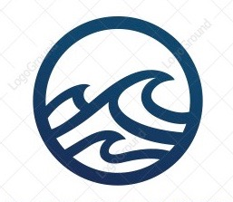
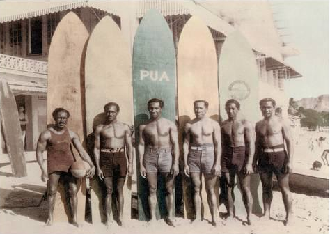

The riding of waves has likely existed since humans began swimming in the ocean. In this sense, bodysurfing is the oldest type of wave-catching. Standing up on what is now called a surfboard is a relatively recent innovation developed by the Polynesians.The influences for modern surfing can be directly traced to the surfers of pre-contact Hawaii.

TSP
History of Surfing
Save The Oceans
Week 7 Day 2
The Surfing Project
A brief history of surfing

Hawaiian Duke Kahanamoku and his Brothers
Hawaiian Duke Kahanamoku and his Brothers
with Surfboards at Waikiki Beach, Hawaii
Photograph by Tai Sing Loo, 1928
Bonus